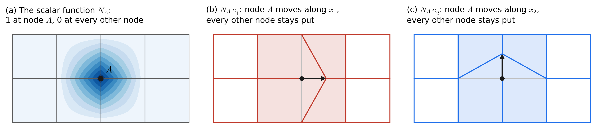
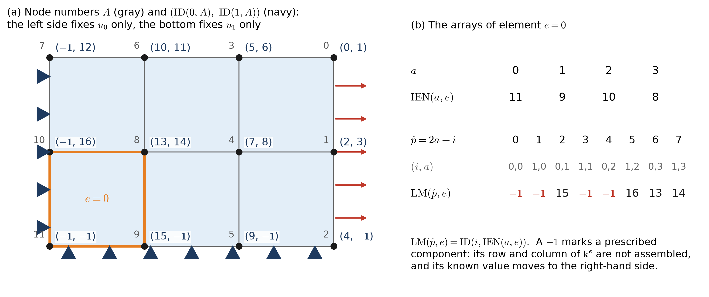
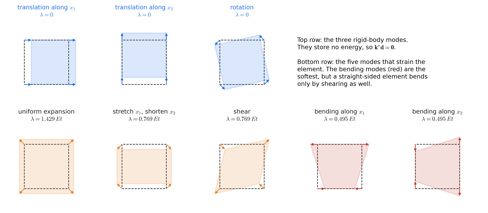
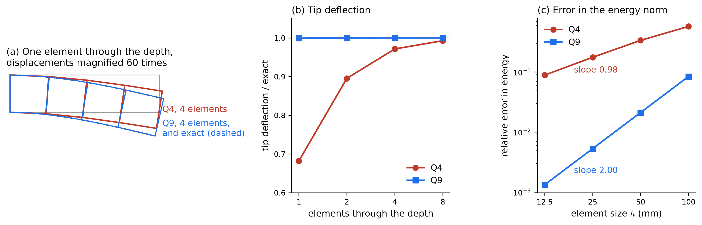
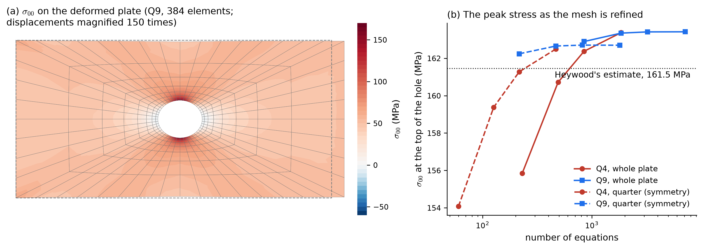
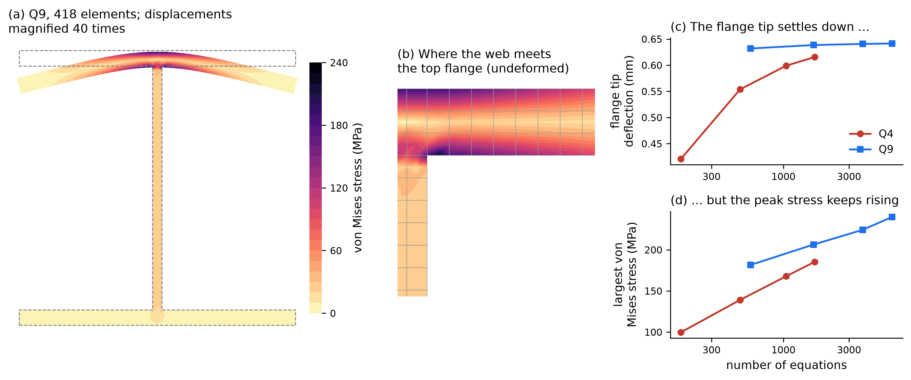

import {CANTILEVER, PLATE, WSHAPE, GEOMETRIES, createSolver, bcToData, bcEditor, planeGraphic,
deformedCanvas, drawDeformed, drawDeformedMesh, drawOutline, drawGlyphs, evaluate, nodalStress,
fieldValue, vonMises, locate, cantileverExact, heywood, kEntries, sideNodes}
from "./elast2d.js"
import {drawSpy} from "./fem2d.js"
import {texMatrix, num} from "./fem1d.js"Appendix I — Linear Elasticity II: Plane Elasticity, by Galerkin’s Method
This page solves the plane elasticity problem of Linear Elasticity I by Galerkin’s method. If stress, strain, Hooke’s law, or the boundary conditions need review, that page develops each of them with pictures and widgets. The finite element machinery is the one built for heat flow in 2D Poisson II: the same quadrilateral elements, isoparametric map, Gauss quadrature, and assembly. This page concentrates on what changes when the unknown is a vector.
| Heat flow (2D Poisson II) | Plane elasticity (this page) | |
|---|---|---|
| unknowns at each node | 1, the temperature | 2, the displacements \(u_0\) and \(u_1\) |
| equation numbers | \(\mathrm{ID}(A)\) | \(\mathrm{ID}(i, A)\), one for each direction |
| derivatives of a basis function | \(\nabla N_a\), a 2-vector | \(\mathbf{B}_a\), a \(3 \times 2\) matrix |
| material | \(\kappa\), a number | \(\mathbf{D}\), a \(3 \times 3\) matrix |
| one entry of \(\mathbf{k}^e\) per pair of nodes | \(\int \nabla N_a \cdot \kappa\,\nabla N_b\,d\Omega\) | a \(2 \times 2\) block \(\int \mathbf{B}_a^T\mathbf{D}\,\mathbf{B}_b\,t\,d\Omega\) |
| size of \(\mathbf{k}^e\), Q4 and Q9 | \(4 \times 4\) and \(9 \times 9\) | \(8 \times 8\) and \(18 \times 18\) |
| motions with no energy | one: a constant temperature | three: two translations and a rotation |
| after the solve | the heat flux \(-\kappa\nabla u^h\) | the stresses \(\mathbf{D}\mathbf{B}\mathbf{d}\), the von Mises stress, the reactions |
I.1 The Galerkin form
The weak form from the previous page is the principle of virtual work. In Voigt notation, the strain of a displacement field is the 3-vector \(\{\varepsilon(\underline{u})\} = (u_{0,0},\ u_{1,1},\ u_{0,1} + u_{1,0})^T\), and the bilinear form is
\[ a(\underline{w}, \underline{u}) = \int_\Omega w_{(i,j)}\,c_{ijkl}\,u_{(k,l)}\,d\Omega = \int_\Omega \{\varepsilon(\underline{w})\}^T\,\mathbf{D}\,\{\varepsilon(\underline{u})\}\;t\,d\Omega \]
with \(\mathbf{D}\) the plane stress or plane strain matrix, and \(t\) the plate thickness in plane stress (\(t = 1\) in plane strain, where everything is per unit length). Galerkin’s method looks for \(\underline{u}^h = \underline{v}^h + \underline{g}^h\), where \(\underline{g}^h\) takes the prescribed values \(g_i\) on \(\Gamma_{g_i}\), and \(v^h_i\) and every weighting function \(w^h_i\) vanish there:
\[ (\mathrm{G}) \qquad a(\underline{w}^h, \underline{v}^h) = (\underline{w}^h, \underline{f}) + (\underline{w}^h, \underline{h})_\Gamma - a(\underline{w}^h, \underline{g}^h) \qquad \forall\, w^h_i \in \mathcal{V}^h_i \]
Every term is a virtual work, exactly as for the rod. What is new is that each function has two components, and that the conditions on \(\Gamma_{g_i}\) apply to one component at a time.
I.2 Two unknowns at each node

The scalar basis functions \(N_A\) are those of 2D Poisson II. Each component of the displacement uses them:
\[ u^h_i(\underline{x}) = \sum_{A} N_A(\underline{x})\,d_{iA} \qquad\Longleftrightarrow\qquad \underline{u}^h(\underline{x}) = \sum_{A} \sum_{i=0}^{1} d_{iA}\,N_A(\underline{x})\,\underline{e}_i \]
- \(d_{iA}\) is the displacement of node \(A\) along degree of freedom \(i\), in mm. The degree of freedom is numbered from 0, like every other index of the arrays: \(i = 0\) is the direction \(x_0\), and \(i = 1\) is the direction \(x_1\), with unit vectors \(\underline{e}_0\) and \(\underline{e}_1\). Each node carries two displacements, \(d_{0A}\) and \(d_{1A}\).
- \(N_A\,\underline{e}_i\) is a vector basis function (Figure I.1 b and c): the displacement field in which node \(A\) moves one unit along degree of freedom \(i\) and every other node stays put. A mesh with \(n_{np}\) nodes has \(2n_{np}\) of them.
- Galerkin’s method uses each vector basis function in turn as the virtual displacement \(\underline{w}^h\). The equation it produces is the balance of forces at node \(A\) along degree of freedom \(i\).
- A component that is prescribed at node \(A\) has no equation: its virtual displacement must be zero there. The other component at the same node may still be unknown.

The bookkeeping of Class 14 gains a direction index:
\[ P = \mathrm{ID}(i, A), \qquad \hat{p} = 2a + i, \qquad \mathrm{LM}(\hat{p}, e) = \mathrm{ID}\big(i,\ \mathrm{IEN}(a, e)\big) \]
- \(\mathrm{ID}(i, A)\) is the global equation number of degree of freedom \(i\) of node \(A\), or \(-1\) if that component is prescribed (Figure I.2 a). The ID array has two rows, one for each degree of freedom.
- The local nodes of an element are numbered by the stride rule of Class 11, \(a = a_\xi + (p+1)\,a_\eta\), row by row from the bottom left, as in Class 14 and Class 28: for a four-node element, local node 2 is at the top left and local node 3 at the top right. The heat problem on the earlier pages numbered them counterclockwise, as Hughes does. The order changes only the order of the rows and columns of \(\mathbf{k}^e\), not the solution.
- As in the class notes and the course code, every index in these arrays is numbered from 0: the nodes, the elements, the local nodes, the equations, and the degree of freedom.
- The equations are numbered node by node: the unknowns of node 0 first, \(\mathrm{ID}(0, 0)\) and \(\mathrm{ID}(1, 0)\), then node 1, and so on, skipping the prescribed components. Numbering this way keeps the two unknowns of a node next to each other, so the matrix stays banded when the nodes are well ordered.
- Within an element, the local equation \(\hat{p} = 2a + i\) runs through the local nodes in the same way: \((i, a) = (0, 0), (1, 0), (0, 1), (1, 1), \ldots\) (Figure I.2 b). In general, \(\hat{p} = n_{ed}\,a + i\), with \(n_{ed} = 2\) unknowns per node. The hat keeps it apart from the polynomial degree \(p\); Hughes, who numbers every index from 1 and writes it without the hat, has \(p = n_{ed}(a - 1) + i\).
- \(\mathrm{LM}(\hat{p}, e)\) tells assembly where row \(\hat{p}\) of \(\mathbf{k}^e\) goes in \(\mathbf{K}\), and a \(-1\) tells it not to put it anywhere. The assembly loop is the one from the heat problem, with \(\hat{p}\) and \(\hat{q}\) taking \(2n_{en}\) values instead of \(n_{en}\).
In the example, the left side fixes only \(u_0\). Its nodes keep their \(u_1\) unknowns, and their \(x_1\) equations hold the traction \(h_1 = 0\): the rollers let them slide. This is the boundary of the previous page split once for each direction, turned into bookkeeping.
I.3 Strain from the nodal displacements: the \(\mathbf{B}\) matrix
Inside element \(e\), the displacement is \(\underline{u}^h = \sum_a N_a\,\underline{d}_a\), where \(\underline{d}_a = (d_{0a}, d_{1a})\) holds the displacements of local node \(a\). Differentiating each component gives the strain as a matrix times the nodal displacements:
\[ \{\varepsilon(\underline{u}^h)\} = \begin{pmatrix} u^h_{0,0} \\ u^h_{1,1} \\ u^h_{0,1} + u^h_{1,0} \end{pmatrix} = \sum_{a=0}^{n_{en}-1} \mathbf{B}_a\,\underline{d}_a, \qquad \mathbf{B}_a = \begin{bmatrix} N_{a,0} & 0 \\ 0 & N_{a,1} \\ N_{a,1} & N_{a,0} \end{bmatrix} \]
Placing the \(n_{en}\) blocks side by side gives \(\mathbf{B} = [\,\mathbf{B}_0\ \mathbf{B}_1\ \cdots\ \mathbf{B}_{n_{en}-1}\,]\), a \(3 \times 2n_{en}\) matrix, and \(\{\varepsilon\} = \mathbf{B}\,\mathbf{d}^e\), where \(\mathbf{d}^e\) stacks the nodal displacements \(\underline{d}_0, \underline{d}_1, \ldots\) of the local nodes in order.
- The derivatives \(N_{a,0}\) and \(N_{a,1}\) are the ones the heat problem already needed, computed through the isoparametric map: \(\nabla_x N_a = DF^{-T}\,\nabla_\xi N_a\).
- The first row of \(\mathbf{B}_a\) gives the stretch along \(x_0\) from the \(x_0\) displacement; the second, the stretch along \(x_1\) from the \(x_1\) displacement.
- The third row mixes them: the change of angle \(\gamma_{01}\) comes from how \(u_0\) varies with \(x_1\) and how \(u_1\) varies with \(x_0\). This row is where the two directions meet.
- \(\mathbf{B}\) depends on the point: it is evaluated at each Gauss point, like \(\nabla N_a\).
I.4 The element stiffness matrix
Substituting \(\{\varepsilon(\underline{w}^h)\} = \mathbf{B}\,\mathbf{c}^e\) and \(\{\varepsilon(\underline{v}^h)\} = \mathbf{B}\,\mathbf{d}^e\) into \(a(\underline{w}^h, \underline{v}^h)\) restricted to one element gives \(\mathbf{c}^{eT}\,\mathbf{k}^e\,\mathbf{d}^e\), with
\[ \mathbf{k}^e = \int_{\Omega^e} \mathbf{B}^T\,\mathbf{D}\,\mathbf{B}\;t\,d\Omega \approx \sum_{l=0}^{n_{int}-1} W_l\;\mathbf{B}^T\mathbf{D}\,\mathbf{B}\;t\;j\,\Big|_{\tilde{\underline{\xi}}_l} \qquad\Longleftrightarrow\qquad \mathbf{k}^e_{ab} = \int_{\Omega^e} \mathbf{B}_a^T\,\mathbf{D}\,\mathbf{B}_b\;t\,d\Omega \quad (2 \times 2) \]
- \(\mathbf{k}^e\) is \(2n_{en} \times 2n_{en}\): \(8 \times 8\) for Q4 and \(18 \times 18\) for Q9. Its entry \(k^e_{\hat{p}\hat{q}}\), with \(\hat{p} = 2a + i\) and \(\hat{q} = 2b + j\), is the force at local node \(a\) along degree of freedom \(i\) caused by a unit displacement of local node \(b\) along degree of freedom \(j\), with every other displacement held at zero.
- The quadrature is the one from the heat problem, \((p + 1) \times (p + 1)\) Gauss points, with \(j = \det(\partial\underline{x}/\partial\underline{\xi})\) the Jacobian determinant.
- \(\mathbf{k}^e\) is symmetric because \(\mathbf{D}\) is.
Writing out one \(2 \times 2\) block for an isotropic material shows how the directions couple:
\[ \mathbf{k}^e_{ab} = \int_{\Omega^e} \begin{bmatrix} D_{00}\,N_{a,0}N_{b,0} + D_{22}\,N_{a,1}N_{b,1} & D_{01}\,N_{a,0}N_{b,1} + D_{22}\,N_{a,1}N_{b,0} \\ D_{01}\,N_{a,1}N_{b,0} + D_{22}\,N_{a,0}N_{b,1} & D_{11}\,N_{a,1}N_{b,1} + D_{22}\,N_{a,0}N_{b,0} \end{bmatrix} t\,d\Omega \]
- Compare the heat problem’s \(\int \kappa\,(N_{a,0}N_{b,0} + N_{a,1}N_{b,1})\,d\Omega\). Each diagonal entry of the block has the same form, but with a different “conductivity” in each direction: \(D_{00}\) along the direction of the displacement and the shear modulus \(D_{22}\) across it.
- The off-diagonal entries are new. They are the forces in one direction caused by a displacement in the other: pulling a node along \(x_0\) pushes its neighbors along \(x_1\), through Poisson’s effect (\(D_{01}\)) and through shear (\(D_{22}\)). This is the coupling term \((\lambda + \mu)\,u_{j,ji}\) of Navier’s equations, seen from inside one element.
I.5 The element force vector
The right-hand side of \((\mathrm{G})\) restricted to one element gives the force vector, with two entries for each local node \(a\), in the local equations \(\hat{p} = 2a\) and \(\hat{p} = 2a + 1\):
\[ \mathbf{f}^e_a = \int_{\Omega^e} N_a\,\underline{f}\;t\,d\Omega + \int_{\Gamma^e \cap \Gamma_h} N_a\,\underline{h}\;t\,d\Gamma - \sum_{b=0}^{n_{en}-1} \mathbf{k}^e_{ab}\,\mathbf{g}^e_b \]
- The first term is the body force, which is zero in the examples here.
- The second is the traction, integrated along each element side on which it is applied, with one-dimensional Gauss points along the side, as for the heat flux in 2D Poisson II. Its \(x_0\) component is integrated over the sides in \(\Gamma_{h_0}\), and its \(x_1\) component over the sides in \(\Gamma_{h_1}\). It is the work of the applied traction through the virtual displacements \(N_a\,\underline{e}_0\) and \(N_a\,\underline{e}_1\): the share of the load that goes to node \(a\).
- The last term moves the prescribed displacements to the right-hand side, as for the heat problem: \(\mathbf{g}^e_b\) holds the prescribed displacements of local node \(b\), with 0 for a component that is unknown.
- The test for \(\Gamma_{h_i}\) is made one direction at a time. A side on rollers that fix \(u_0\) still receives its \(h_1\) term.
I.6 Three motions cost nothing

The eigenvectors of \(\mathbf{k}^e\) are the element’s natural ways of deforming, and each eigenvalue \(\lambda\) is the stiffness of its mode: the energy stored is \(\tfrac{1}{2}\lambda\) for a mode of unit size. Figure I.3 shows all eight for a square Q4.
- Three eigenvalues are zero. The two translations and the rotation strain nothing, so they store no energy, and \(\mathbf{k}^e\,\mathbf{d} = \mathbf{0}\) for each. The heat problem had one such mode, a uniform temperature.
- The same is true of the assembled matrix of a whole body: if the supports do not stop every rigid-body motion, \(\mathbf{K}\) is singular, and the solution is not unique. In 2D, the supports must prevent two translations and one rotation. A body pulled at one end and held only by rollers that fix \(u_0\) can still slide along \(x_1\). The explorer below reports this when it happens.
- The constant-strain modes stretch, shear, or expand the element uniformly. A uniform expansion is the stiffest, with \(\lambda = E\,t/(1 - \nu)\) here, because it fights both normal stiffnesses at once.
- The bending modes are the softest. A Q4 element’s sides stay straight, so it cannot curve the way a bending beam does. Instead, its bending mode also shears it: the right angles at the corners change. That extra shear strain costs energy that the real beam does not store, which makes Q4 elements too stiff in bending. This is shear locking, and the cantilever below measures it.
I.7 Assembly and the global stiffness matrix
Assembly follows 2D Poisson II unchanged, with \(\mathrm{LM}\) in place of the heat problem’s single-row array:
\[ \mathbf{K} = \mathop{\mathsf{A}}_{e=0}^{n_{el}-1} \mathbf{k}^e, \qquad \mathbf{F} = \mathop{\mathsf{A}}_{e=0}^{n_{el}-1} \mathbf{f}^e, \qquad K_{PQ} \mathrel{+}= k^e_{\hat{p}\hat{q}} \ \text{ with } P = \mathrm{LM}(\hat{p}, e),\ Q = \mathrm{LM}(\hat{q}, e) \text{ both} \neq -1 \]
- \(\mathbf{K}\) is \(n_{eq} \times n_{eq}\), where \(n_{eq}\) is twice the number of nodes, less the prescribed components.
- It is symmetric, and positive definite once the supports stop every rigid-body motion (Class 23). So \(\mathbf{K}\mathbf{d} = \mathbf{F}\) has exactly one solution, and the explorer solves it by Cholesky factorization.
- It is sparse, and its nonzeros come in \(2 \times 2\) blocks: two nodes that share an element interact in both directions. A row of an interior Q4 node has up to 18 nonzeros, twice the heat problem’s 9.
- Numbering the nodes well keeps the nonzeros near the diagonal. The explorer numbers them by the reverse Cuthill–McKee algorithm before assigning equation numbers.
I.8 After the solve: stresses, reactions, and checks
Solving gives the nodal displacements. Everything else is computed from them, element by element.
Stresses. At any point of element \(e\), \(\{\sigma\} = \mathbf{D}\,\mathbf{B}\,\mathbf{d}^e\). The displacements are continuous between elements, but their derivatives are not, so the stress jumps across element boundaries. A common remedy for plotting is to average the stresses that the elements sharing a node give at that node. The size of the jumps is itself a useful measure of the error: where they are large, the mesh is too coarse. In plane strain, \(\sigma_{22} = \nu(\sigma_{00} + \sigma_{11})\) is computed afterward.
The von Mises stress combines the components into the single number that ductile metals yield on:
\[ \sigma_{vm} = \sqrt{\tfrac{1}{2}\left[(\sigma_{00} - \sigma_{11})^2 + (\sigma_{11} - \sigma_{22})^2 + (\sigma_{22} - \sigma_{00})^2\right] + 3\,\sigma_{01}^2} \]
It is \(\sigma\) for a bar in tension, and \(\sqrt{3}\,\tau\) under pure shear. Steel with a yield stress of 345 MPa, a common grade for rolled shapes, yields where \(\sigma_{vm}\) reaches 345 MPa.
Reactions. The force a support exerts along degree of freedom \(i\) at node \(A\) is \(R_{iA} = \sum_e \left(\mathbf{k}^e\,\mathbf{d}^e - \mathbf{f}^e_{\text{applied}}\right)\) at the prescribed components, the out-of-balance force that the support must supply. Because the basis functions add up to 1, a rigid translation is one of the finite element displacement fields, and it strains nothing. So the internal forces of every element add up to zero, and the sum of the reactions balances the sum of the applied loads exactly, on any mesh. The explorer reports this check.
I.9 Three test problems
The same code solves the three problems introduced on the previous page, on four levels of refinement and with both element types.
I.9.1 The cantilever: an exact answer, and shear locking

The end conditions of the exact solution of Timoshenko and Goodier are applied as data: the exact displacements on the left end, and the parabolic shear traction on the right. So the only error is the discretization error.
- Q4 locks. With one element through the depth, the Q4 tip deflects 68% of the exact value; with two, 90%; with eight, 99%. The bending modes of Figure I.3 cannot bend without shearing, so the mesh is too stiff until the elements are small.
- Q9 does not. A biquadratic element can bend its sides, and one element through the depth already gives 99.9% of the tip deflection.
- The error in the energy norm falls at the rates of the heat problem: slope 1 for Q4 and slope 2 for Q9, \(h^p\) for a smooth solution. Locking does not change the rate; it inflates the error at every mesh size.
- Locking is not specific to elasticity, but elasticity is where it is met first. Hughes Chapter 4 treats remedies for both shear locking and the volumetric locking that occurs as \(\nu \to \tfrac{1}{2}\); the explorer below caps \(\nu\) at 0.45 to stay clear of the latter.
I.9.2 The plate with a hole: a stress concentration

- The peak stress converges: with Q9 elements, the whole plate gives 162.9 MPa on the coarsest mesh and 163.4 MPa on the finest, 3.27 times the applied 50 MPa.
- Q4 elements approach from below, from 155.8 MPa on the coarsest mesh to 163.4 MPa on the finest.
- Heywood’s estimate is 161.5 MPa. The converged finite element value is 1.2% higher.
- The quarter model and the whole plate converge to slightly different values, 162.7 and 163.4 MPa. They are different problems. The whole plate is held at its left end, which stops the end from narrowing; the quarter model, by its symmetry, represents a plate pulled equally at both ends. The difference is the end restraint, felt weakly at the hole.
- The quarter model needs a quarter of the equations. Its symmetry conditions, \(u_0 = 0\) on the vertical cut and \(u_1 = 0\) on the horizontal cut, are the direction-by-direction supports of the previous page.
I.9.3 The W-shape: a singular corner

- Each flange outstand bends like a short cantilever, 123 mm long and 14.2 mm thick, under 1 MPa. Beam theory puts its bending stress near the web at about 225 MPa, and the finite element solution agrees in the flange away from the corner.
- The flange tip deflects 0.641 mm on the finest Q9 mesh. The four Q9 meshes agree to within 1.5%: displacements converge.
- The largest von Mises stress keeps rising as the mesh is refined: 182, 206, 224, 240 MPa on the four Q9 meshes. It sits at the re-entrant corners, where the exact linear elastic stress is infinite. No mesh converges to an infinite value; each refinement simply finds more of it.
- The real rolled shape has fillets at these corners, and its stress there is finite. A model with sharp corners can still be trusted for displacements, reactions, and stresses away from the corners. For the stress at a corner, the fillet has to be modeled.
I.10 Explore plane elasticity
Choose a body, a mesh, and a material, and set the boundary conditions by clicking on the sides of the body. For each side and each direction, choose whether it is free, carries a traction (Neumann), or has a prescribed displacement (Dirichlet). The solution updates as you move the sliders. Then look through the tabs. Solution shows the deformed body, colored by the quantity you choose, with the checks of equilibrium. Element arrays shows \(\mathrm{IEN}\), \(\mathrm{LM}\), \(\mathbf{D}\), \(\mathbf{B}\), and \(\mathbf{k}^e\) for one element, and the eigenvalues of \(\mathbf{k}^e\). Matrices shows the \(\mathrm{ID}\) array and the pattern of \(\mathbf{K}\). Check compares the solution with what is known about each problem.
The body and the mesh
Plane stress or plane strain
The material
The boundary conditions
NoteThe notation and the code
The arrays on this page are numbered from 0, with \(-1\) for a prescribed component, as in the class notes. The solver behind the explorer numbers its equations from 1 and marks a prescribed component with 0, and its JavaScript version also numbers the nodes and elements from 1, as Hughes does. In the table, each index is numbered as on this page, and the last column says what the code stores there.
| This page | The code (python/elast2d.py and elast2d.js) | |
|---|---|---|
| \(n_{sd} = n_{ed} = 2\) | two directions, two unknowns per node | |
| \(\mathrm{ID}(i, A)\) | ID[i][A] (JavaScript), ID[i, A] (Python) |
holds \(\mathrm{ID}(i, A) + 1\), so a prescribed component is 0 |
| \(\mathrm{IEN}(a, e)\) | IEN[e][a] (JavaScript), IEN[e, a] (Python) |
holds \(\mathrm{IEN}(a, e) + 1\) in JavaScript and \(\mathrm{IEN}(a, e)\) in Python, with the local nodes in the stride order of Class 11, not the counterclockwise order of the heat code |
| \(\mathrm{LM}(\hat{p}, e)\), with \(\hat{p} = 2a + i\) | LM[e][p] (JavaScript), LM[e, p] (Python) |
holds \(\mathrm{LM}(\hat{p}, e) + 1\), so a prescribed component is 0 |
| \(\mathbf{B}_a\), \(\mathbf{D}\) | bmatrix, dmatrix |
engineering shear strain in the third row |
| \(\mathbf{k}^e\), \(\mathbf{f}^e\) | elementArrays, sideIntegral (element_arrays, side_load in Python) |
|
| \(\Gamma_{g_i}\), \(\Gamma_{h_i}\) | dirichlet = {side: {i: g}}, traction = {side: [h0, h1]} |
in dirichlet, the key is the degree of freedom, 0 or 1; a side can be in \(\Gamma_{g_0}\) and \(\Gamma_{h_1}\) at once |